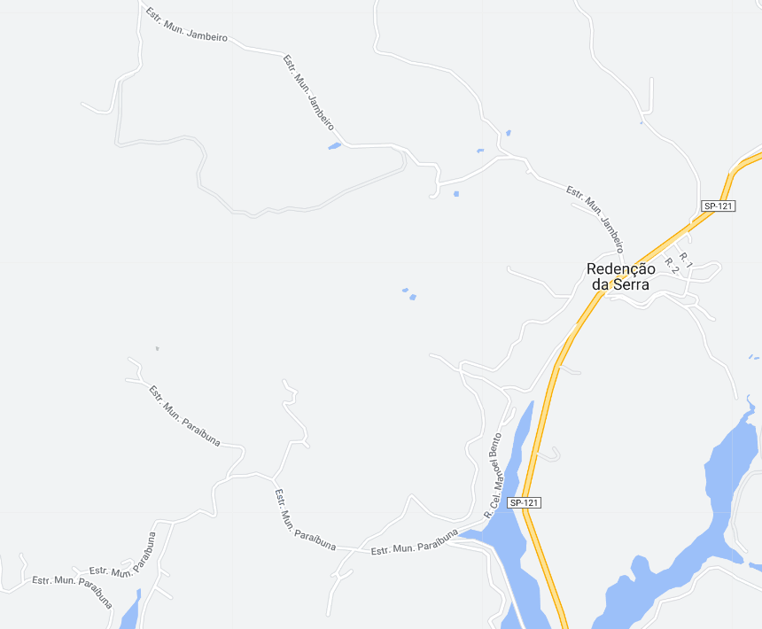
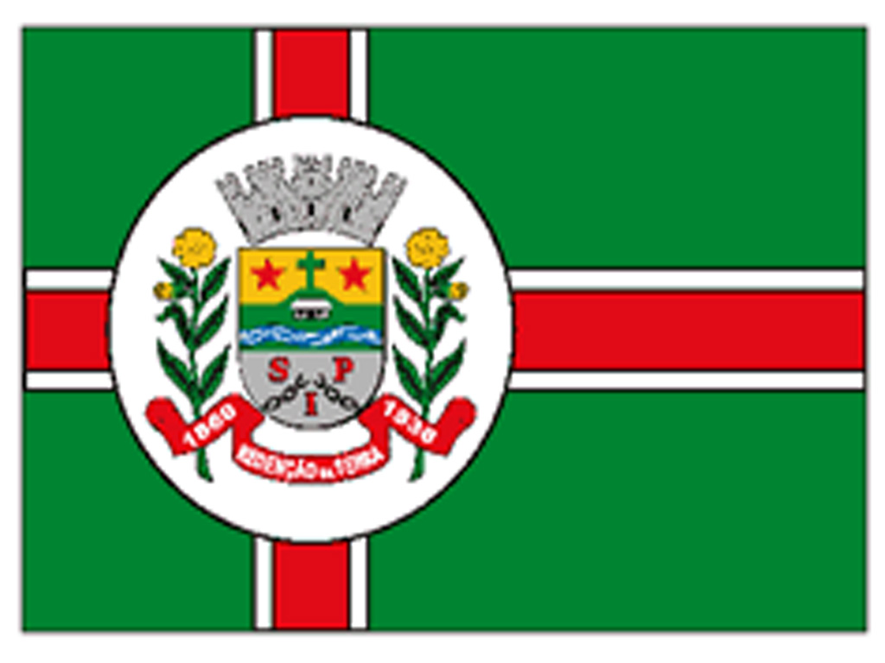

Redenção da Serra - Geodex


Município de Redenção da Serra
-
Populacão: 3.827 pessoas
-
Área: 309,441km²
-
Fundação: 8 de maio de 1877
-
Distância da Capital: 145km
A cidade de Redenção da Serra, localizada no estado de São Paulo, teve sua origem no século XIX, quando a região era ocupada por fazendas de café. A área que compreende o atual município era conhecida como "Sertão do Roncador" e era ponto de passagem para tropeiros e viajantes que se dirigiam ao litoral. Com o declínio da cultura cafeeira, a região passou a se dedicar à agricultura diversificada, com destaque para a produção de banana e hortaliças. A cidade foi oficialmente fundada em 1º de janeiro de 1993, desmembrando-se do município de Paraibuna, e desde então vem se desenvolvendo e buscando o progresso em diversos setores, como turismo e agropecuária.